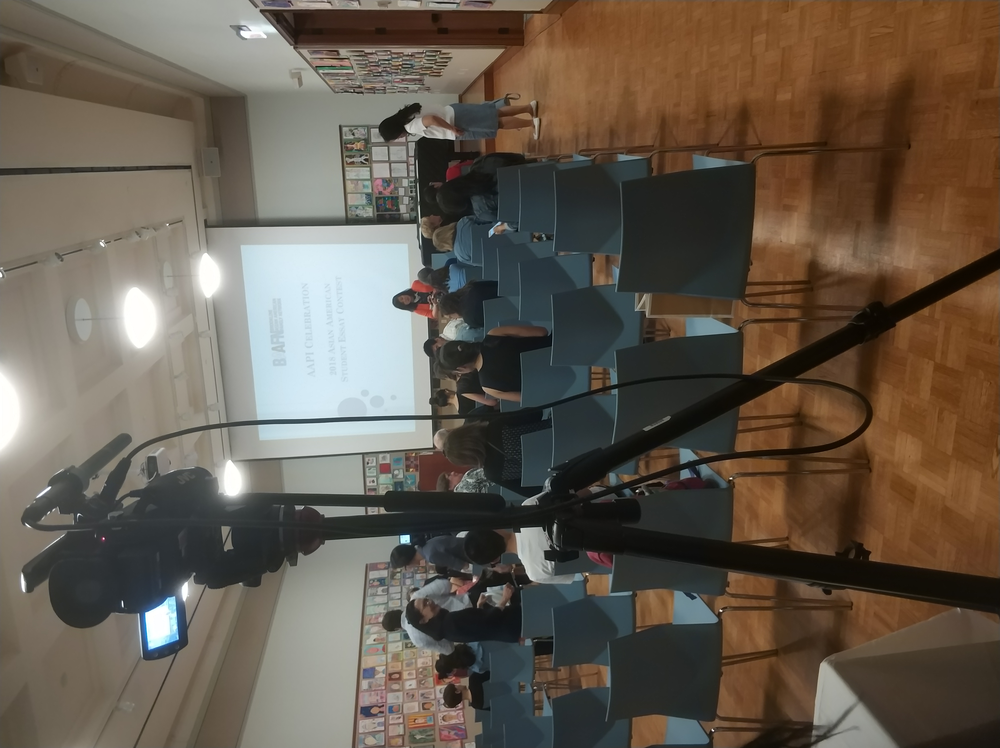

In freshman year of high school, I began to work at the Brookline Interactive Group. We contributed to “The Fun Show” production by editing the clips and lights. I also participated in the Red Sox game recording and got the chace to interview the CEO of the Fenway Stadium about their methods of management. Moreover, I spearheaded producing propaganda videos with team members about community benefits and environment protection.
Later, I volonteered at the Boston Medical Center and the Tufts Medical Center in the Geriatric and Dermentology departments in the summer. In the process, I found that there are some patients with language disabilities or do not understand English as they speak another language. There are also other difficulties such as patients who just came to the states do not have a built in medical profile in the system. I hope that I can design a better and more accessible system for the patients to use, especially those with disabilities.
